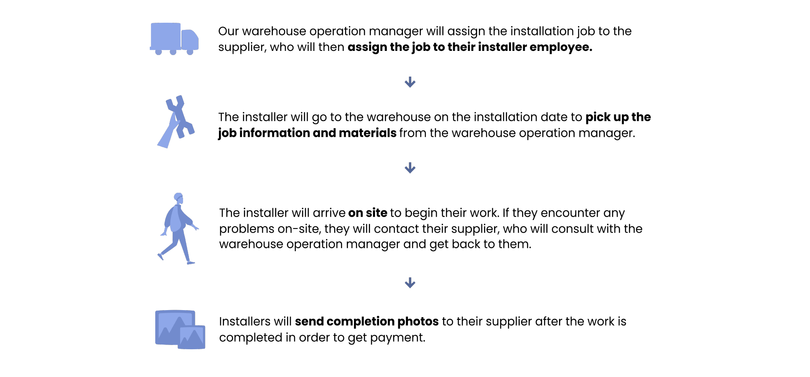

OVERVIEW
The rapid increase in our job workload caused work delays and miscommunication among workers
RMI company strived to provide customers with a shorter installation cycle to increase our competitiveness in the market. Previously, the booming real estate market led to a rapid increase in our installation jobs. However, work delays and miscommunication where noticed some between our warehouse and outsourced installers due to the increased workload. Therefore, our company wanted to develop a mobile application to make the communication between installers and our warehouse staff more efficient and provide better installation services to our customers.
Improved communication between workers and keep information consistency and up-to-date
The goal of this installer mobile app was to improve communication between installers, suppliers, and our warehouse staff. To keep information consistent and up-to-date, and to increase user engagement with the app.
RESEARCH & DISCOVERY
Based on the research, the main issue was the communication problem resulting in inconsistent information and lower working performance.
Target Users

Field Studies
Observed the work processes of our local installers, suppliers, and warehouse operation manager, as well as how they interact with one another.
User Interview
By interviewing 15 target users, including installers, installer suppliers, and warehouse employees, I found that they were experiencing three main pain points .
-
Low User Engagement
Installer prefer to call or text out warehouse manager directly rather than use the app because it's quicker and easier.
-
Duplicate Works
When installers send the updates or completion photos to the supplier, the supplier have to send it to our warehouse which is a duplicate work and it's time consuming.
-
Delay for Closing Jobs
The duplicate communication between installers, suppliers, and warehouse staff cause the delay of closing the job.
DESIGN
The design direction was focused on enhancing user engagement with this app.
Based on my UX research,keeping information consistent and up to date was the most important aspart for users. However, we need more data from our users, especially installers. To collect more data, we must increase the user engagement rate of the installer app. Therefore, our goal was to develop the app as a platform for suppliers to easily organize their jobs and manage their installers. Once suppliers see the value of the app and become accustomed to using it, they will encourage their installers, who are their direct employees, to use it to track job progress and performance.
DESIGN SOLUTION

Lists of Job Information
Providing details about the location of the job, the installer who will be working on it, and the working progress of the work can help suppliers manage their installers and work more efficiently. Also, suppliers can track overdue works.
Review Pending Jobs
Facilitate communication between our suppliers and warehouse operation managers regarding job distribution. Also, suppliers can directly assign work to their installers using the app.


Job Detail Page
Provides installers with all necessary information about the job. Also, because most installers are non-tech savvy, the layout is kept simple and easy to use.
Communication Platform
Ability to send messages directly to our warehouse if they have any requests or on-site issues. The message will be recorded as a note in our internal system so our staff can follow up on the situation.

RESULT
User Feedback
We initially released the MVP version and received positive feedback from our users:
- Suppliers who found it helpful in tracking their installer's work and streamlining the follow-up process.
- Installers feel the process is easier for them to use.
- Warehouse employees and account managers can access real-time information from the app that can be shared with our customers.
Future Iteration
By increasing user engagement, our tech team started receiving data from the suppliers and installers within our system. For future feature development, we were planning to add the payment history record in the app to motivate installers to work with us. Also, we intended to leverage the data to evaluate installer performance and workload, enabling our operations team to select suppliers they would like to keep working with.
LESSONS LEARNED
What did I learn?
Through this project, I've come to realize that an app can often cater to multiple target users, each with distinct purposes for utilizing it. However, it is impractical to fulfill the needs of every user completely. Therefore, we must prioritize and concentrate on leveraging the most critical needs.
Initially, the stakeholder desired the app to facilitate communication and job information exchange between suppliers and warehouse employees. However, upon interviewing the suppliers and observing their work process alongside our staff, I discovered their reliance on paper and pen for task management. To address this, I propose prioritizing the suppliers' needs, which not only improves their management experience but also resolves communication issues.
Therefore, acquiring insight through user research is a very important part as you may discover some potential but significant user needs.